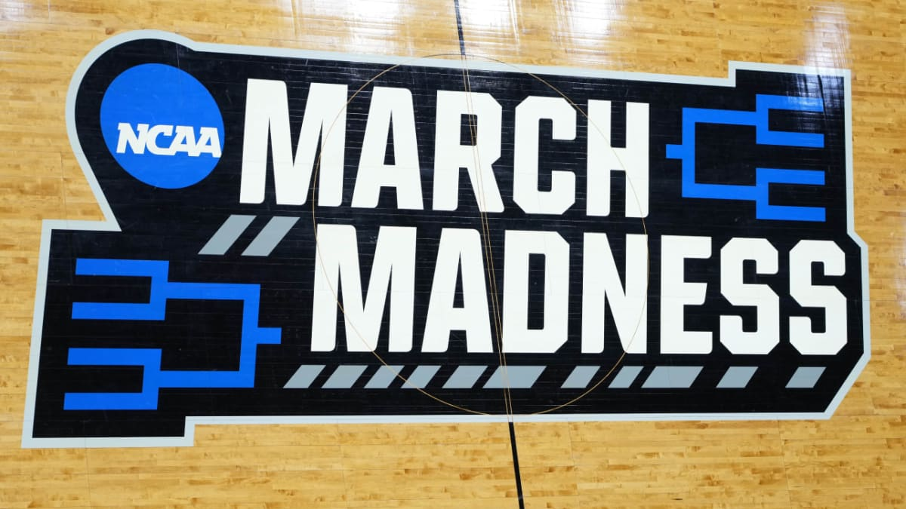
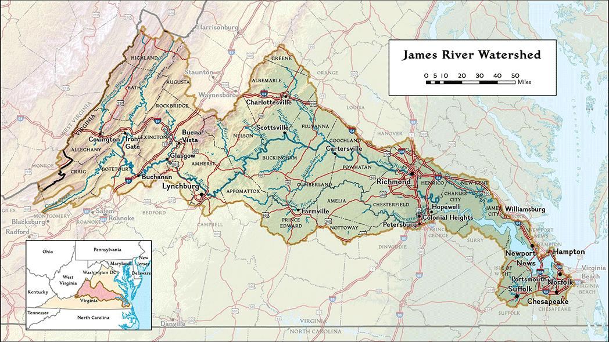
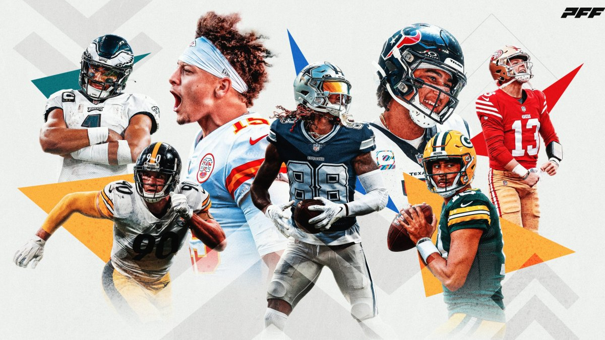

Matt Carswell
Home
Projects
Resume
About
Project Portfolio
Categories
All
(10)
Data Viz
(6)
Deep Learning
(3)
Finance
(2)
Machine Learning
(2)
Sports
(3)
Sustainability
(3)
Time Series
(4)
An Exploration of Reddit Restaurant Data
Data Viz
Sustainability
I completed this project with 3 other group members as a part of my Big Data and Cloud Computing Class (DSAN 6000). We used AWS and Azure to process over 1 terabyte of…
Dec 13, 2024
An LSTM Autoencoder for Dogecoin Anomaly Detection
Deep Learning
Time Series
Finance
In this project, for my Deep Learning Class (DSAN 6660), I used neural networks to predict anomalous market behavior in the Dogecoin market, a popular cryptocurrency.…
Dec 10, 2024
Using Deep Learning for Avalanche Detection with Ground-Based Photography
Deep Learning
In this project. I use raw image data and Convolutional…
Aug 8, 2024
Anthropogenic Climate Change and the Earth’s Changing Landscape
Data Viz
Sustainability
I submitted this project as a part of an application for a scholarship available to returning Georgetown Data Science students. The prompt was to use…
May 24, 2024

March Madness
Machine Learning
Deep Learning
Sports
In this project, 3 other group members and I developed a project that explores what goes into an upset in the NCAA Basektball Division I March Madness Tournament. We were…
May 15, 2024
Visualizing Car Thefts in DC
Data Viz
Time Series
In this project, I worked with 3 other group members to visualize how car thefts in DC have increased over recent years. We took a look at where cars are being stolen in DC…
May 3, 2024
Daily Stock Market Report ETL Pipeline
Data Viz
Time Series
Finance
In this project, I worked with a couple partners to develop an Extract, Transform, and Load (ETL) pipeline that extracts stock market data from Polygon.io’s stock API and…
May 1, 2024
Predicting Horse Racing Winners at the Hong Kong Jockey Club (HKJC)
Machine Learning
Sports
In this project, I predict horse racing winners and podium finishers at the Hong Kong Jockey Club. I use a variety of statistical methods including Naive Bayes, Random…
Dec 18, 2023

Water Quality in the Lower James Can Help Explain Phytoplankton Levels in the Chesapeake Bay
Data Viz
Sustainability
Time Series
This project explores data from the Lower James watershed, my hometown water shed, and how climate change has impacted it, along with the Chesapeake Bay downstream.
Dec 15, 2023

NFL Home & Away Performance Analysis
Data Viz
Sports
In this project, I, along with a group, explore how NFL teams perform when they are the home team versus when they are the away team. We were able to…
Nov 23, 2023
No matching items